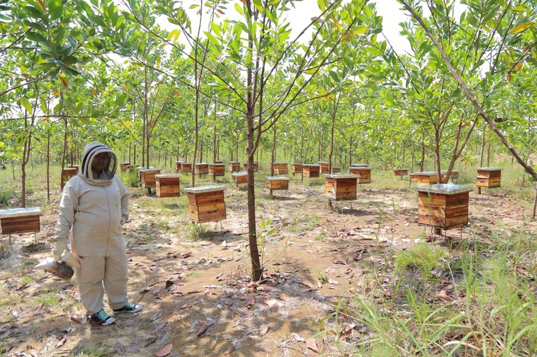
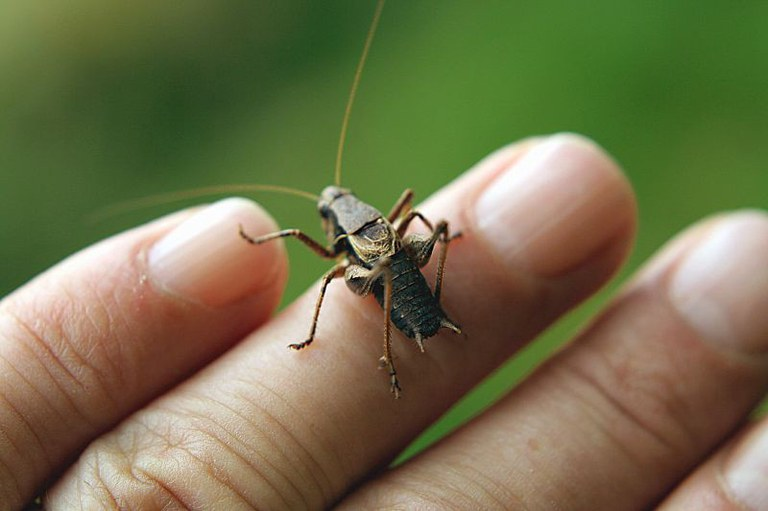
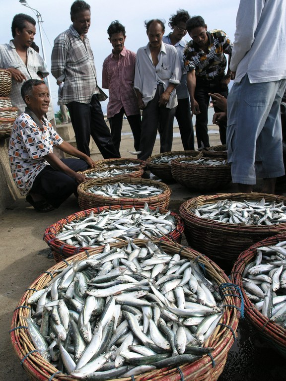
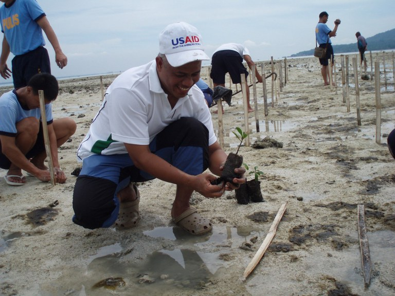

Conservation is Development
Wild plants and animals provide countless benefits to humans. They support food security and nutrition, contribute to economic development, and strengthen resilience to climate change and other external shocks. Yet, with more than 65% of wildlife lost since 1970, nature and its contributions to people are rapidly deteriorating, threatening global development gains.
Today, on World Wildlife Day, USAID reflects on the ways that biodiversity contributes to human well-being.
We’re celebrating this year’s theme, Recovering Key Species for Ecosystem Restoration, by honoring underappreciated yet threatened animals and plants — such as pollinators and mangroves — and the benefits that they can provide to billions of people when their habitats are conserved or restored.
Below, learn how USAID is working to make that happen.
Pollinators

More than 75% of global food crops rely on pollinators such as bees, birds, butterflies, and bats. These crops include nutrient-rich fruits and vegetables as well as global commodities like coffee and cocoa. Yet, despite their importance to global food systems, wild pollinators are under threat due to habitat loss, pesticides, climate change, invasive species, and pests and pathogens.
USAID’s biodiversity programming supports conservation enterprises, such as beekeeping; it simultaneously reduces threats to pollinators, generates income-earning opportunities, and incentivizes habitat conservation. For example, in Colombia, USAID worked with local communities, the Colombian Government, and the private sector to rehabilitate 17,000 hectares of degraded gold mining land, turning a once barren landscape into a haven for bees and other organisms, strengthening local livelihoods in addition to biodiversity conservation.
From Paraguay to Tanzania, Madagascar to the Solomon Islands, USAID supports the resurgence of beekeeping to strengthen food security and provide communities with a reliable source of income while contributing positively to the health of the environment.
Other Insects

Other insects are also crucial to human well-being. Crickets, in particular, pack a powerful punch. They contain two to three times more protein per pound than livestock yet require much less land, water, and feed, and emit much less carbon dioxide and methane to produce the same amount of protein.
Through research funded by USAID’s Partnerships for Enhanced Engagement in Research (PEER) program, a scientist in Madagascar is identifying cricket species native to the country’s highlands that could be farmed on a commercial scale to address food insecurity while reducing the strain of agricultural expansion on Madagascar’s unique environment and biodiversity.
Marine Life

Unsustainable management of fisheries and other marine and coastal resources threatens the food security and livelihoods of more than three billion people worldwide who rely on fish for at least part of their diet.
In Indonesia, USAID’s support for sustainable marine management is helping fish stocks rebound thanks to the introduction of fair trade fishing practices. Marine resources are an essential source of nutrition for billions of people globally. Each year, USAID invests more than $33 million in about 15 countries across Asia, Africa, and Latin America and the Caribbean to promote sustainable fisheries and conserve marine biodiversity.
Mangroves

Mangrove trees have superpower-like qualities. They help maintain water quality and filter pollutants, allowing fish and other aquatic wildlife to thrive. They are also one of the best defenses against the impacts of climate change, acting as a natural physical barrier to protect against increasingly frequent storm surges and coastal erosion.
But mangroves are increasingly at risk as they are cut down for fuel wood or to clear land for construction or aquaculture. In Haiti, USAID is supporting the rehabilitation of mangrove ecosystems to restore wildlife habitats, protect at-risk coastal communities, and boost resilience to natural shocks. A similar effort is underway in Madagascar, which is home to about 20% of Africa’s mangrove forests. There, USAID’s Hay Tao program helps develop tools that promote alternate wood sources and reforestation efforts. Similarly, in Sierra Leone, the USAID-funded West Africa Biodiversity and Climate Change program, which ended in February 2021, worked to raise awareness of the benefits of mangroves among natural resource-dependent communities and engage them in restoration efforts.
Around the world, USAID works to support the conservation of diverse species and their habitats, both for their intrinsic value and the innumerable benefits they provide to global well-being.
Recognizing that conservation and development efforts are more sustainable when led by local people, USAID has been a leader in community-based conservation, vastly expanding land, marine, and coastal areas under conservation management. By partnering with communities to conserve key ecosystems and critical landscapes, USAID’s conservation work can yield benefits for all.
---
This article was originally published on Medium.